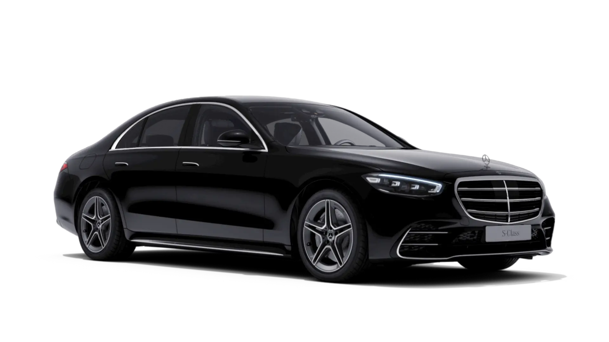

✈
Transfert Aéroport Orly
Notre cœur de métier : les liaisons avec l'aéroport de Paris-Orly (terminaux Orly 1 à 4). Accueil en zone d'arrivée, vols suivis en direct et aide aux bagages. Nous desservons aussi CDG, Le Bourget et Beauvais.
VTC haut de gamme · Aéroport d'Orly ↔ Paris
Spécialiste des liaisons avec l'aéroport Paris-Orly (ORY), ASC Driver vous conduit en toute discrétion et toujours à l'heure, à bord de Mercedes Classe E, V et S. Nous couvrons aussi CDG, Le Bourget et l'ensemble de l'Île-de-France.
Nos prestations
Voyage d'affaires, déplacement privé ou grand événement : ASC Driver vous réserve un service sur mesure et raffiné, au départ et à destination de l'aéroport d'Orly comme de toutes les plateformes aéroportuaires parisiennes.
Notre cœur de métier : les liaisons avec l'aéroport de Paris-Orly (terminaux Orly 1 à 4). Accueil en zone d'arrivée, vols suivis en direct et aide aux bagages. Nous desservons aussi CDG, Le Bourget et Beauvais.
Un chauffeur rien que pour vous, à l'heure ou à la journée : rendez-vous d'affaires, virées shopping ou découvertes touristiques, partout dans la capitale.
Pour vos mariages, séminaires, galas ou salons, offrez-vous une prestation d'exception avec chauffeur en costume, à la hauteur des occasions qui comptent.
Cap sur Disneyland Paris, Versailles, la Normandie ou toute autre région française : installez-vous confortablement, on s'occupe de la route.
Ponctualité et confidentialité irréprochables pour vos collaborateurs et vos clients. Facturation société et compte privilégié sur demande.
Gare Montparnasse, du Nord, de Lyon ou de l'Est : un trajet rapide et confortable entre les gares de Paris et votre point d'arrivée.
Aéroport Paris-Orly
Votre chauffeur ASC Driver vous attend en zone d'arrivée de l'aéroport de Paris-Orly, pancarte à votre nom. Situé à une vingtaine de minutes au sud de Paris, Orly est notre terrain de prédilection : nous suivons votre vol en direct pour une prise en charge sans la moindre attente.
Côté ouest de la plateforme (ex-Orly Ouest) : vols nationaux et européens, notamment Transavia. Votre chauffeur vous accueille dès la sortie.
Vols européens et internationaux. Une fois vos bagages récupérés, prise en charge immédiate au point de rencontre.
Côté sud (ex-Orly Sud) : long-courriers et compagnies internationales. Votre chauffeur vous attend à la sortie du hall.
Vol en avance ou retardé ? Aucune inquiétude : l'attente vous est offerte et calée sur l'atterrissage réel, votre vol étant suivi en continu, de jour comme de nuit.
Notre flotte Mercedes-Benz
Un parc Mercedes récent et entretenu avec le plus grand soin, équipé pour faire de chaque liaison Orly–Paris un trajet aussi agréable que reposant.
Le juste équilibre entre raffinement et confort pour vos déplacements professionnels comme personnels entre Orly et Paris.

Le sommet du luxe automobile : une expérience de voyage hors du commun pour vos prestations les plus pointues.

Spacieux et élégant, parfait pour les familles, les groupes et celles et ceux qui voyagent avec de nombreux bagages.
Chauffeur présent avant l'heure, vol suivi en direct et marge de sécurité intégrée : c'est nous qui patientons, jamais vous.
Un prix arrêté à la réservation : aucune surprise, pas de supplément bagage, zéro frais caché.
Des chauffeurs expérimentés, discrets et en tenue, qui maîtrisent Paris et le sud francilien à la perfection.
Réservez à toute heure, 7j/7, jours fériés compris, y compris pour les vols de nuit au départ d'Orly.
Zones desservies
Depuis Paris-Orly, nous vous déposons partout dans la capitale, en Île-de-France et bien plus loin. Nos trajets vedettes : navette Orly ↔ Gare Montparnasse, Orly ↔ La Défense et Orly ↔ Disneyland Paris.
Votre destination n'est pas dans la liste ? Nous organisons tous vos trajets sur mesure — demandez votre devis.
Tarifs indicatifs
Des forfaits indicatifs pour les liaisons Orly les plus fréquentes. Pour un montant personnalisé, écrivez-nous ou utilisez notre formulaire de réservation.
* Tarifs TTC indicatifs ; ils dépendent de l'horaire, de la distance réelle et de la disponibilité. Le prix définitif est arrêté au moment de la réservation.
Tarification transparente
Chez ASC Driver, le prix d'un chauffeur privé se présente sous forme de forfait fixe, confirmé et verrouillé dès la réservation. Pas de compteur, pas de mauvaise surprise au moment de descendre.
Bagages, péages, carburant et TVA sont déjà dans le tarif. Le prix chauffeur privé affiché est précisément la somme que vous payez.
60 minutes d'attente offertes à l'aéroport (45 min en gare) : de quoi gérer sereinement un vol ou un train en retard.
Le prix se calcule selon la distance, l'horaire et la classe retenue : Berline E, Première classe S ou Van V.
Envie de connaître le prix exact de votre trajet ? Demandez un devis gratuit, sans engagement — nous répondons vite.
Réservation
Renseignez le formulaire ci-dessous : nous revenons vers vous rapidement avec la confirmation et le tarif ferme. Pour une demande urgente, appelez-nous directement.
Questions fréquentes
À l'aéroport de Paris-Orly, votre chauffeur vous retrouve en zone d'arrivée — terminaux Orly 1, 2, 3 ou 4 — muni d'une pancarte à votre nom. Votre vol est suivi en direct : en cas de retard, l'attente est ajustée sans frais.
Oui : le montant est arrêté et garanti dès la réservation. Pas de supplément bagage ni de frais caché — vous recevez le devis ferme avant de confirmer.
Nous faisons le maximum pour les réservations de dernière minute, dans la limite de nos disponibilités. Le plus rapide reste de nous joindre au +33 6 51 24 91 33.
Espèces, carte bancaire et virement (comptes professionnels). Vous réglez à bord ou à l'avance, selon ce qui vous arrange.
Oui, gratuitement et sur simple demande. Communiquez l'âge de l'enfant à la réservation pour que nous installions le rehausseur ou le siège qui convient.
Notre spécialité, c'est Paris-Orly, mais nous desservons aussi les aéroports de Paris-CDG, du Bourget et de Beauvais, ainsi que les longues distances partout en France (Disneyland, Versailles, la Normandie...).
Réservez dès maintenant votre trajet Orly ↔ Paris d'exception.